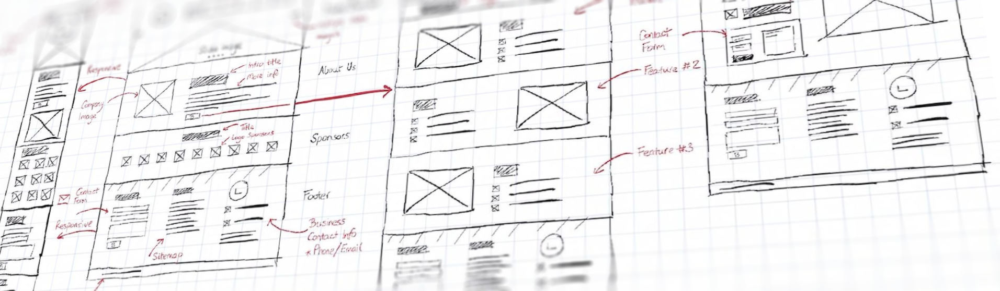

Bij het designen (en animeren) van UI zitten we meestal automatisch al in vakjes te denken. Je scherm is een vakje, met daar in vakjes, met daar in vakjes, etc. Logisch, dit is misschien wel de beste manier om informatie te organiseren en presenteren.
Bij het grafische onderdeel van mooie interfaces, zijn we vooral bezig om die vakjes op een zo leuk mogelijke manier aan te kleden. Hierbij zitten we vast aan de systemen achter deze vakjes. Het resultaat is dat alles er eigenlijk een beetje hetzelfde uit ziet. Op zich geen probleem, genoeg variabelen om mee te spelen om toch tot een uniek design te komen.
De meest boeiende designs en animaties kunnen echter gemaakt worden als je uit het vakjes systeem gaat breken. Dit is vaak lastig, case-specific, totaal niet schaalbaar. Maar toch, daar zit wel iets van magie.
Check dit 'smots-menu'. Eigenlijk is ie best lelijk, ik ben dan ook geen 'designer✨' natuurlijk. Maar dit menu is gewoon COOL. Het is anders dan normaal. Als je gevangen zit in vakjes systemen, dan ga je dit nooit bedenken.
Dit soort dingen